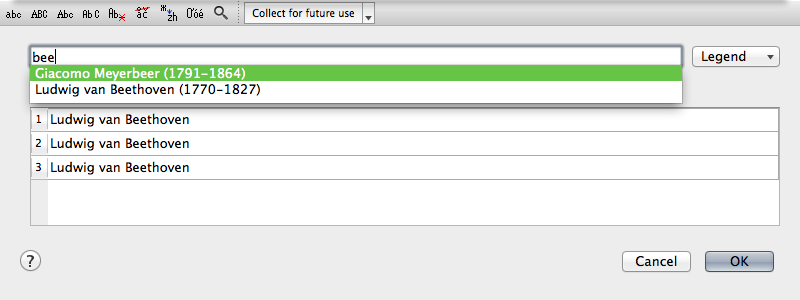
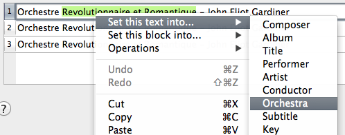
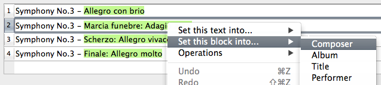
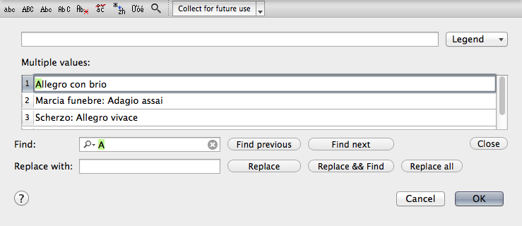

Use the Edit Dialog
The Edit Dialog allows you to edit a tag file by file or set the same tag text for all selected files.
The upper toolbar contains buttons for quick access to tags editing operations. The button helps adding tag values to autocomplete lists.
The first line: this line contains the text that will be written into all selected files. On the image above all titles are different, so the first line is empty. If you type some text here, it will overwrite the values below.
Multiple values: different text for different files. If you change any line here, the first line will be cleared.
The button gives you access to placeholders.
Autofilling track numbers. If you are editing track numbers, you can autonumber them
by typing 1 or 01 in the first line. If you are editing other tags please use the autonumbering function.
Using tags autocompletion: The autocompletion is available here as well.

Filling in tags: To quickly "parse" parts of a tag into other tags, use the context menu:

Set this text into...: sets the selected text into all selected files as 'Artist' (f.e.).
Set this block into...: extracts similar texts in other rows of 'Multiple values' and sets them as 'Artist' (f.e.). To see what text will be selected in other rows, select some text in the current row while holding down the ⌘ key.

Find & Replace: Click the button to show the find & replace panel.

You can navigate through the table by clicking buttons or using shortcuts: F3 - find next, ⇧F3 - find previous.
The button allows you to specify some search options:
- Case Sensitive
- Whole Words Only
- Use Regular Expressions. The available regular expressions are listed in Appendix 4.
© 2009-2016 Alex Novichkov